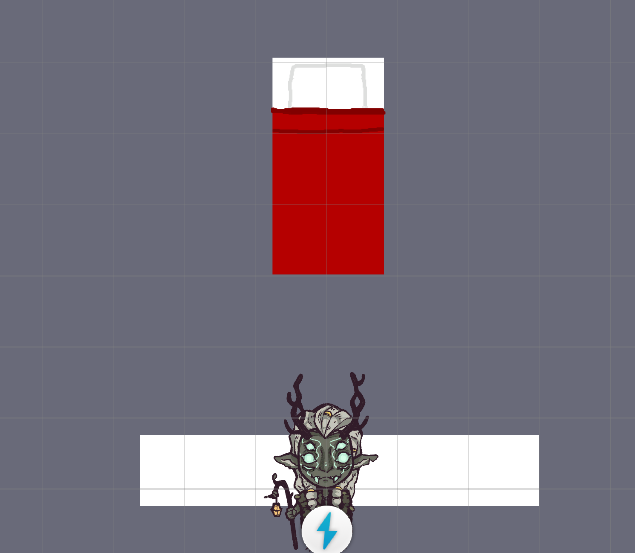

Final Feature Sprint (3/24/24 to 4/7/24)
This was the final sprint for adding any new features or design changes -- it's all polish from here!
Task 1: Create Hero Save Point Prefab
The antagonistic "hero" of Project Quest mysteriously comes back from the dead multiple times throughout our story.
This is actually his ability to write to a save, but the reveal of this power felt very sudden. We planned on scattering
save points throughout the game world to hint at this, but the current save point wouldn't do (it was just a floating
white circle).
I created a new prefab and made sure it was functionally compatible anywhere in the world. I was meant to also implement
updated art assets and start placing the save point into the overworld. Unfortunately the new sprite was
not completed in time for this sprint, and I reached out but did not hear back on any concrete details for where the object
should go. I still made sure the prefab was ready for placement at any time, and added some fun temp art in the meantime:

Task 2: Kid Lost in the Forest
The narrative team came up with our first "sidequest", in which a young kid follows the player into the forest. He gets into
a bunch of trouble, and the player needs to help him back home. At least, that was the elevator pitch for this sidequest, but
unfortunately I was never provided the necessary implementation details, such as game state and dialogue. This meant the task
was a lot more open-ended but definitely couldn't be as expansive as originally envisioned. I ended up writing my own one-off
conversation into the game and left it at that:
This was a great opportunity to work with some systems I had less experience with, though. Getting raw dialogue into the game
was easy, but there was depth to the visual novel-like dialogue canvas. Moving or zooming into character portraits during
dialogue involved figuring out the correct dependencies and cross-referencing other dialogue scenes to get working. It was
more complicated than expected but seeing small creative decisions appear right on screen was very rewarding.
Task 3: Kid Chase Softlock
Pressing space triggers all interactions and progresses dialogue in Project Quest. Spamming space too much and too fast
often breaks the game:
I'd fixed a similar issue before by disabling colliders when they were no longer needed to trigger dialogue, but little did
I know this task would take the longest amount of time this whole sprint.
For my first attempt I just tried to reuse the collider disable script, but the dialogue flow made it difficult to use.
Prior to the scene above, the player "plays tag" with the kid, chasing him around the entire town and starting separate
conversations with him at certain checkpoints. Thus, disabling the kid's collider after any given conversation would just
immediately break the conversations that followed.
What if the script just checked if there wasn't any more dialogue left, then? I whipped up a revamped script component
that took in dialogue data as a dependency and canceled repeated dialogue, and it worked perfectly.
The real challenge for this task was testing my code. For every change and test, I needed to play through the
entire tag-and-chase sequence with the kid, just to make sure none of his dialogue broke. I eventually wisened up
and used a custom save state once I was confident the chase wasn't being affected, but this definitely wore me down a little!
Task 4: Sprite Pivot Points
Certain sprites (deer and bridge) had overlap issues with the player:
The player would exist behind the deer in-game, but appeared in front and thus laid on top of the deer.
I looked up some tutorials (1,2) and they both pointed me to adjusting the Transparency Sort Axis.
The axis was already (0, 2, 0) in Project Quest, and while one tutorial recommended only the y-axis greater than 0, the other
showed a solution with only the z-axis greater than 0. Player movement used the same axes in both videos, which made things
even more confusing!
After experimenting with the transparency sort axis for a while I started looking into changing sprite layer dynamically using
a script, but thankfully I didn't waste too much time on that. On a hunch I did some math with the player and deer transforms,
and luckily I realized that the problem lay in the deers' collider sizes. Their colliders were just too small all along, so
the player was just walking over them in-world, and the sort axis was doing its job just fine. Each deer also had a
differently aligned collider, which helped to hide this issue.
The bridge sprite I looked into had a sorting issue as well. Once the player reaches its halfway point, they clip through:
I tested a fix on this by changing the sprite's pivot point, but the same sprite was used for a separate,
completely horizontal bridge, so doing that would break the latter bridge. Once again the task I was assigned in Jira described
a new sprite for the fully vertical bridge, but it arrived late so it will be implemented in the next sprint.